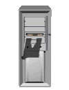

ЧЕБУРНЕТ КОННЕКТ★彡 ТЫ УЖЕ В ЧЕБУРНЕТЕ ИЛИ НЕТ? 彡★
Бесплатная проверка блокировок прямо в браузере: 221 сервис, твой провайдер, признаки DPI/ТСПУ и гео-блокировки. Узнай, ты уже в Чебурнете — и как выбраться ПРОВЕРЬ СЕБЯЖми кнопку — Чебурнет Коннект проверит из твоего браузера доступность 221 сервиса (соцсети, мессенджеры, видео, новости, банки), определит твоего провайдера и найдёт признаки DPI/ТСПУ. Отключи VPN перед проверкой!  ТВОЁ ПОДКЛЮЧЕНИЕДанные о подключении появятся после запуска проверки. СВОДКАСводная статистика появится после запуска проверки.
ВЫБРАТЬСЯ ИЗ ЧЕБУРНЕТА!
Если проверка показала блокировки, DPI или гео-ограничения — это работа ТСПУ твоего оператора. Прокси вернёт Telegram бесплатно, а VPN на VLESS Reality откроет весь интернет и обходит DPI. Промокод VNESPISKA = −20% ★ настройка — в гайдах Как работает Чебурнет КоннектПроверка идёт прямо из твоего браузера — через твоего оператора связи. Для каждого сервиса браузер пытается установить соединение с его доменом; если оператор фильтрует трафик (DPI/ТСПУ), соединение не проходит — это и фиксирует тест. Дополнительно определяется твой IP и провайдер, а для части сервисов — признаки DPI (когда мелкий запрос проходит, а передача данных обрывается) и гео-блокировки (когда ресурс сам закрыт для твоей страны). Это ориентировочная проверка: точный тип блокировки (DNS, IP или DPI по SNI) из браузера не определить, но факт ограничения тест покажет. Что значит «ты в Чебурнете»«Чебурнет» — ироничное название «суверенного рунета», когда вместо свободного интернета доступен лишь ограниченный набор разрешённых ресурсов. Если проверка показала много недоступных сервисов и признаки DPI — ты фактически уже в Чебурнете. Выбраться помогает бесплатный прокси (Telegram) или VPN на VLESS Reality (весь интернет). Как узнать, блокирует ли оператор через ТСПУТСПУ — оборудование глубокой фильтрации (DPI) у операторов, управляемое централизованно. Признаки: YouTube грузится медленно или обрывается; сайты не открываются, хотя «пинг проходит»; зарубежные сервисы виснут. Запусти проверку — если зарубежные сервисы недоступны или замедлены, а российские работают, это типичная картина ТСПУ. Какие мессенджеры работают при глушении интернетаПри глушении мобильного интернета и белых списках Telegram, WhatsApp и Signal могут не работать. Вернуть Telegram бесплатно помогает MTProto-прокси, а доступ ко всем мессенджерам — VPN на VLESS Reality, который маскируется под HTTPS и проходит через ТСПУ. |